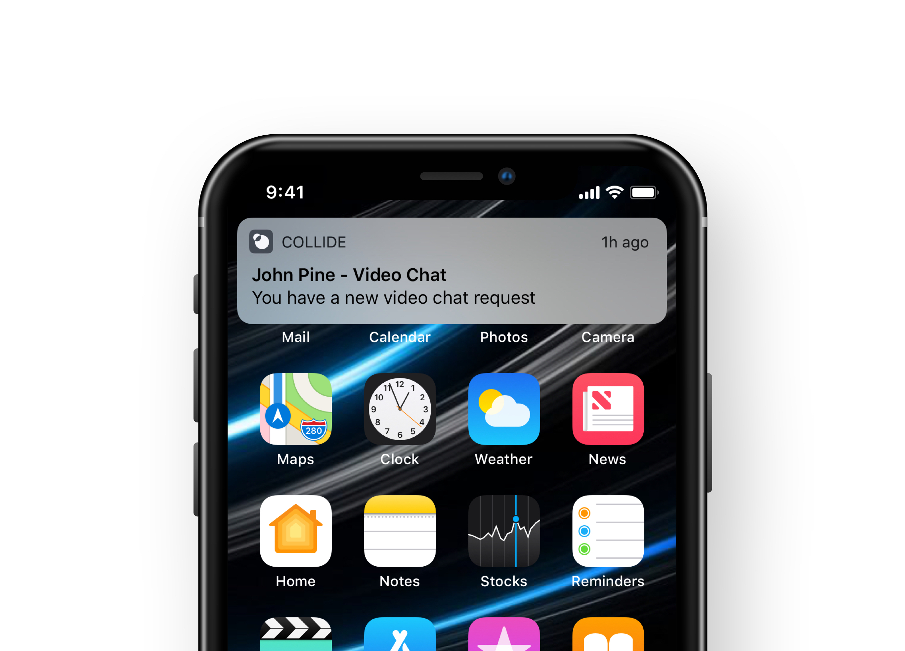

Collide - Notifications
Serve users notifications that are actionable and/or informative.
Case study
Brief
The challenge was to design a notifications system for our web app. I lead the project as it had been one of our backlogged items I wanted to complete.
Understanding notifications
Notifications can be beneficial, but also irritating to a user. Users allowing notifications from a product is an act of trust, and we do not want to take that for granted.
Good notifications are:
- Non-interfering - Let users know that something important has happened and would be beneficial for the user to pay attention to.
- Contextual - Notifications should be direct. Be explicit in letting the user know what has happened and whether they should actively interact with it or not.
- Manageable - Give the users the ability to manage how and when these notifications occur.*
Bad notifications are:
- Valueless - If there is no direct value for the user to interact with the notice, then it should not be a notification.
- Disruptive - Do not cause a false sense of urgency. Notifications should be served when the user is not in the progress of an activity.
- Generic - Unless necessary, information within notifications shouldn't be generic.
"Don't send notifications whenever you like, consider the users emotional state..."
Nir Eyal on tying external triggers to internal triggers
Research
I began by researching the how web notifications work. I wanted a holistic understanding of the technology before diving into the designs.
Luckily, both of our main browser targets (Chrome and Safari) manages notifications similarly.
By using Muzli's notification model examples, I decided that a Mixed Notification Model works best due to its ease of scalability. Our business model poses the need for a diverse suite of features to fit business needs.
What is a mixed notification model?
Mixed model consist of a Source and an Anchor. One determines where the notification is coming from, while the other determines where it should be sent.
Sources
- Profile - Relating to the profile of a user. Change if bio, new followers/subscribers, etc..
- Posts - Relating to activity of a specific post. Comments, Likes, etc..
- Events - Relating to primary functional activity between a Supporter and Creator. New Uploads, new Subscriptions, etc..
- Connect - Relating to any activity of the in-app messenger, video chat, and phone calls.
Anchors
- Messenger - All related activity around our in-app messenger will be directed directly to its own anchor.
- Notification Center - This interface will house most notifications that is served to users. Each notification will be distinguishable by the type of source
Execution
Once the planning was finished, I began sketching out ideas until I felt comfortable with the final designs.
Implementation
Once designs and documentation was completed, I created the proper tickets on Github and used Zeplin to handoff designs. I made sure each epic tickets had a proper user story, intent and goal measurement.
I also worked with our product manager and copy writers to make sure every instance of notifications is accounted for.
Examples of notification that will be served
Future plans
The first phase of our notification implementation will only consist of receiving and displaying notifications. I wanted to implement a notification management system, but unfortunately our team did not have the time and resources to do so at the moment.